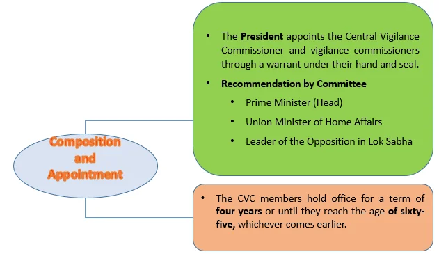
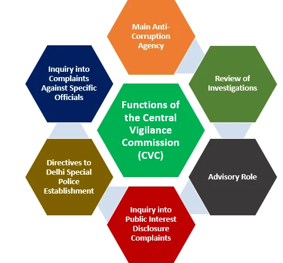

The Central Vigilance Commission (CVC) is a pivotal institution in India dedicated to combating corruption and ensuring transparent governance. As an independent body, the CVC is entrusted with the task of preventing and investigating corruption within the country’s central government agencies. It plays a significant role in promoting integrity and accountability in the public sector, contributing to ethical governance. The CVC collaborates with anti-corruption agencies to address malfeasance and uphold the rule of law, making it a vital component of India’s governance framework.
Evolution of Central Vigilance Commission (CVC)
- Establishment of CVC: The Central Vigilance Commission (CVC) was established in 1964 by an executive resolution of the Central government.
- Recommendation by Santhanam Committee: The establishment of the CVC was recommended by the Santhanam Committee on Prevention of Corruption I (1962-64).
- Initial Status: Originally, the CVC was neither a constitutional body nor a statutory body.
- Statutory Recognition: The CVC was conferred with statutory status by the Central Vigilance Commission Act, 2003 (CVC Act, 2003).
Composition and Appointment

- Multi-Member Body: The CVC is a multi-member body, consisting of a Central Vigilance Commissioner as the chairperson and not more than two Vigilance Commissioners.
- Appointment Process: The President appoints the Central Vigilance Commissioner and vigilance commissioners through warrant under his hand and seal. The appointment is based on the recommendation of a three-member committee comprising of the Prime Minister as its Chairperson, the Union Minister of Home Affairs and the Leader of the Opposition in the Lok Sabha as its members.
- Term and Age Limit: The CVC members hold office for a term of four years or till they attain the age of sixty-five, whichever comes earlier.
- Post-Tenure Employment: After the completion of their tenure in the CVC, the members are not eligible for further employment under the Central or state government.
Removal of CVC and Vigilance Commissioners
The President can remove the Central Vigilance Commissioner or any Vigilance Commissioner on the pretext of being:
- declared insolvent.
- convicted of an offense involving moral turpitude.
- engaged in paid employment outside their official duties during their term in office.
- deemed unfit by the President due to mental or physical infirmity.
- acquiring financial or other interests likely to affect their official functions.
Proven Misbehavior or Incapacity:
The President can also remove the Central Vigilance Commissioner or a Vigilance Commissioner based on proven misbehavior or incapacity. In such cases, the matter is referred to the Supreme Court for an inquiry. If the Supreme Court upholds the cause of removal and advises so, the President can proceed with the removal. Grounds for proven misbehavior include involvement or interest in government contracts and agreements, as well as their profits or benefits.
Salary and Allowances:
The salary, allowances, and other conditions of service of the Central Vigilance Commissioner are at par with those of the Chairman of the Union Public Service Commission (UPSC). The vigilance commissioner’s compensation is comparable to that of a member of the UPSC. Their terms and conditions of service cannot be altered to their disadvantage after their appointment.
Functional Divisions
The CVC operates with its own Secretariat (Secretary, Joint Secretaries, Deputy Secretaries, Under Secretaries, and Office staff) and specialized wings:
- Chief Technical Examiners’ Wing (CTE): The technical wing of the CVC. Primary functions include technical audits of construction works, investigating specific complaints related to construction projects, assisting the CBI in technical aspects/property evaluation in Delhi, and offering advice to Chief Vigilance Officers.
- Commissioners for Departmental Inquiries (CDIs): Inquiry Officers responsible for conducting oral inquiries during departmental proceedings initiated against public servants to determine if disciplinary action is warranted.
Functions of the Central Vigilance Commission (CVC)

- Main Anti-Corruption Agency: The CVC serves as the primary agency for preventing and addressing corruption within the Central government.
- Whistleblower Protection: Designated to receive disclosures under the "Public Interest Disclosure and Protection of Informers’ Resolution" (2004). It is empowered to take action against complainants who make motivated or vexatious complaints.
- Inquiry Authority: Authority to initiate investigations into offenses under the Prevention of Corruption Act, 1988 involving Central government employees, Group ‘A’ officers, and members of All India Services serving in the Union.
- Supervision of CBI: Exercises supervisory authority over the Delhi Special Police Establishment (CBI) concerning corruption investigations and can issue directions to them. Reviews the progress of investigations and prosecution sanction applications.
- Superintendence: Exercises superintendence over the vigilance administration within ministries and advises the Central Government on formulating rules governing vigilance and disciplinary matters.
Central Vigilance Commission (Amendment) Act, 2021
In Section 25 of the CVC Act 2003, a new addition specifies that the Director of Enforcement, upon their first appointment, can have their tenure extended by up to one year at a time if it’s in the public interest. However, this extension cannot go beyond a total of five years, including the initial appointment period.
Conclusion
The Central Vigilance Commission (CVC) stands as a critical pillar in India’s fight against corruption, ensuring transparency and accountability within the public sector. Through its comprehensive structure, statutory powers, and collaborative efforts with other agencies, the CVC plays a pivotal role in maintaining ethical governance. The amendments and evolving functions reflect its ongoing commitment to upholding the rule of law and fostering a corruption-free environment in India.